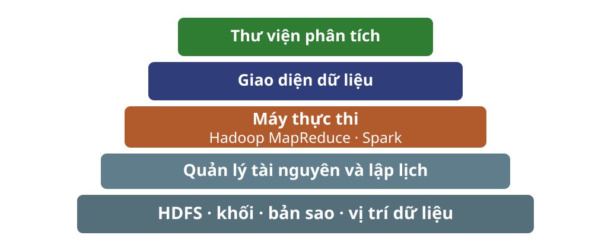

Đầu ra của một lần gộp lại là đầu vào hợp lệ cho lần gộp tiếp.
Cùng ngữ nghĩa
Gộp theo bất kỳ cây nào vẫn biểu diễn đúng phần dữ liệu đã xử lý.
Phân vùng quyết định nơi xử lý khóa
Hàm phân vùng cụ thể hóa bảo đảm nhóm theo khóa.
$p(k)=h(k)\bmod r$
$k$: khóa · $h$: hàm băm · $r$: số Reduce task · $p(k)$: chỉ số task nhận khóa
Mọi cặp có khóa $k$ đi đến một Reduce task.
Một Reduce task thường xử lý nhiều khóa.
Số Reduce task quá lớn tạo nhiều tệp trung gian và chi phí điều phối.
Lệch tải xuất phát từ độ dài danh sách
Reducer
Một lần gọi reduce cho một khóa; khóa phổ biến tạo danh sách dài.
Reduce task
Đơn vị lập lịch có thể chạy nhiều reducer nối tiếp.
Một máy công nhân có thể chạy nhiều Reduce task. Bộ kết hợp làm ngắn danh sách trước khi truyền.
Gộp tải và lập lịch là hai cơ chế khác nhau
Trong một task
Gom nhiều reducer có thể trung bình hóa tải giữa các khóa.
Giữa các máy
Nhiều task cho bộ lập lịch thêm cơ hội phân phối việc.
Câu hỏi: gộp nhiều reducer vào một Reduce task có thể trung bình hóa tải giữa các khóa; tăng số Reduce task chỉ tạo thêm đơn vị lập lịch. Hai cơ chế này khác nhau ở điểm nào?
Kiểm tra tính an toàn của bộ kết hợp
Câu hỏi: trạng thái nào cho phép gộp cục bộ khi cần tính trung bình của mọi số nguyên?
Kiểm tra kiểu trạng thái, ý nghĩa sau mỗi lần gộp và phép tính kết quả cuối.
Thực thi khi máy có thể hỏng
Tác vụ có thể chạy lại nếu đầu ra chỉ phụ thuộc đầu vào và không tạo hiệu ứng ngoài không kiểm soát.
Bộ điều phối theo dõi vòng đời tác vụ
Chờ→Đang chạy→Đã xong
Gán Map task cho công nhân gần khối đầu vào.
Ghi vị trí và kích thước tệp trung gian.
Chỉ gán Reduce task khi đầu vào trung gian sẵn sàng.
Lỗi map và lỗi reduce cần xử lý khác nhau
Hai quy ước đo hai đại lượng khác nhau
$I$: đầu vào map · $M$: dữ liệu trung gian · $O$: đầu ra reduce
$C_t=I+M$ đo tổng kích thước dữ liệu vào các tác vụ; $C_{\mathrm{I/O}}=I+2M+O$ đo số lần đọc và ghi vật lý. Hai công thức không đo cùng một đại lượng.
Giáo trình MMDS
Cộng kích thước đầu vào của tác vụ.
$C_t=I+M$
Trang chiếu MMDS
Đếm toàn bộ đọc và ghi.
$C_{\mathrm{I/O}}=I+2M+O$
Bộ kết hợp tác động vào đại lượng trung gian
$M_c\le M_0$
$M_c$: có bộ kết hợp · $M_0$: không có bộ kết hợp
Không đổi
Kích thước đầu vào $I$ và đầu ra $O$.
Có thể giảm
Kích thước dữ liệu trung gian $M$ và tải của bước trộn.
Kiểm tra chi phí và khôi phục
Câu hỏi: một máy map hỏng sau khi báo hoàn thành. Tác vụ nào phải chạy lại, và đại lượng $I$, $M$, $O$ nào có thể phát sinh thêm trong lần thực thi thực tế?
Từ MapReduce đến ngăn xếp dữ liệu
MapReduce là một máy thực thi trong ngăn xếp, không phải giao diện duy nhất cho mọi bài toán dữ liệu lớn.
Năm tầng chia trách nhiệm

MapReduce phù hợp với phân tích theo lô
Phù hợp
xử lý theo lô;
quét tuần tự tệp rất lớn;
phân hoạch hoặc tổng hợp theo khóa.
Kém phù hợp
truy cập ngẫu nhiên;
phản hồi tương tác;
nhiều vòng lặp dùng lại trạng thái.
Đặc tả một chương trình MapReduce
Nêu phần tử đầu vào, đầu ra và điều kiện trước.
Chọn khóa để gom đúng các đóng góp cần tổng hợp.
Viết map, reduce, điều kiện dừng và trường hợp biên.
Chứng minh mỗi đóng góp được tạo đúng một lần và gom đúng khóa.
Phân tích $I$, $M$, $O$, tải theo khóa và khả năng dùng bộ kết hợp, nêu rõ quy ước chi phí dùng để báo con số.
Kết luận: khi nào dùng MapReduce
Tuyến bài: chia khối → khóa trung gian → nhóm theo khóa → chịu lỗi → chi phí.
Kho hơn 400 TB không vừa một máy; MapReduce đưa tính toán đến dữ liệu.
Dùng MapReduce khi xử lý theo lô, quét tuần tự, tổng hợp theo khóa.
Chuyển sang DAG/Spark khi nhiều vòng lặp dùng lại trạng thái hoặc truy cập bất quy tắc.
Câu hỏi: chọn khóa trung gian cho ba đầu ra: số lần xuất hiện theo từ, tổng byte theo máy chủ Web, và số lần xuất hiện theo chuỗi năm từ.
Bài tập trên lớp
Hai bài trong MMDS kiểm tra lệch tải và thiết kế MapReduce.
Bài 2.2.1 · Lệch tải khi đếm từ
Chạy chương trình MapReduce đếm từ trên một kho lớn, chẳng hạn một bản sao Web. Dùng 100 Map task và một số Reduce task.
Bài 2.2.1(a) · Không dùng bộ kết hợp
Không dùng bộ kết hợp tại các Map task. Thời gian xử lý danh sách giá trị của các reducer có lệch đáng kể không? Giải thích.
Bài 2.2.1(b) · Gom reducer thành tác vụ
Nếu gom ngẫu nhiên các reducer vào 10 Reduce task, lệch tải có đáng kể không? Kết quả thay đổi thế nào nếu gom vào 10.000 Reduce task?
Bài 2.2.1(c) · Dùng bộ kết hợp
Dùng bộ kết hợp tại 100 Map task. Lệch tải có đáng kể không? Giải thích.
Bài 2.3.1 · Tệp số nguyên rất lớn
Thiết kế thuật toán MapReduce nhận một tệp số nguyên rất lớn và tạo bốn loại đầu ra. Có thể giả sử khóa của mỗi cặp đầu ra sẽ bị bỏ hoặc không được dùng.
Bài 2.3.1(a) · Cực đại
Tạo số nguyên lớn nhất.
Bài 2.3.1(b) · Trung bình
Tạo trung bình của mọi số nguyên.
Bài 2.3.1(c) · Loại bản sao
Tạo cùng tập số nguyên, nhưng mỗi số nguyên chỉ xuất hiện một lần.